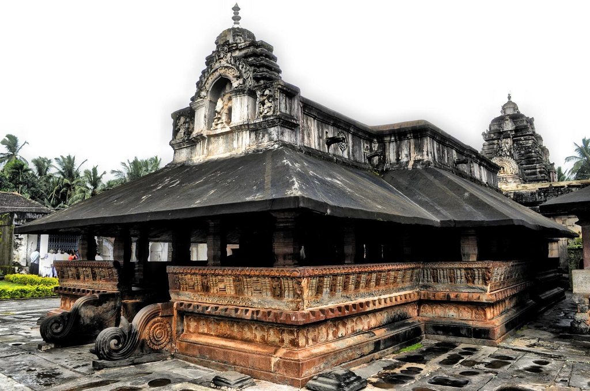
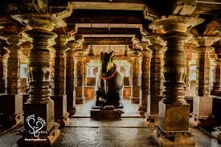
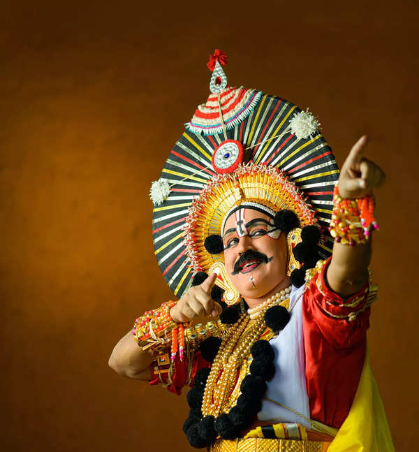

Banavasi: Ancient Temple Town

Madhukeshwara Temple and Ancient Heritage

At the heart of Banavasi lies the Madhukeshwara Temple, constructed in the 5th century and dedicated to Shiva,
the supreme deity in Shaivism, a major branch of Hinduism. The temple serves as a focal point for the town's
growth and cultural heritage.
Historical and Cultural Significance

Banavasi was once the capital of the Kadamba rulers, an ancient royal dynasty that established itself in A.D.
345 and ruled South India for at least two centuries. Adikavi Pampa, the first poet of Kannada, composed his
epics in Banavasi, further enhancing its cultural legacy.
Geographical and Agricultural Features

Banavasi lies in the Malenadu region, surrounded by forests and villages, with the Varada River flowing
around it on three sides. The fertile soil in the region supports the cultivation of various crops,
including paddy, wheat, sugarcane, arecanut, spices, and notably, pineapples, bananas, and ginger. The village
is known for its pineapple farms, and the annual December cultural festival, Kadambothsava, is a significant
event showcasing the region's cultural vibrancy.
Arts and Crafts: Yakshagana and Cultural Festivals


Banavasi has been a cultural center, particularly for the Yakshagana art form. Local artisans craft and sell
classical folk art Yakshagana masks, contributing to the preservation of this traditional art form.
The Kadambothsava festival, held annually in December, is a grand celebration organized by the state
government. The event features folk dancers, drama troupes, classical musicians, art exhibitions, and draws
performers, artists, and writers from across South India.